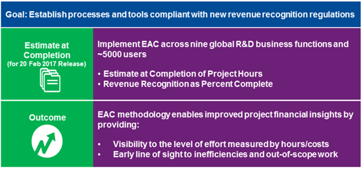

Goal and Outcome for EAC Implementation:
A reliable EAC is an approved project cost estimate that reflects the operational labor effort and expenses required to complete the study over time and that can be used confidently as the basis for revenue recognition.
Reaching a reliable EAC: Utilize available EAC process checklists and stay focused on process compliance:
1. EAC first MonthThe EAC Methodology Checklist tool provides a set of “best practice” guidelines for project teams to use when updating and reviewing their EAC.
Estimate at Completion (EAC) is a methodology that reports and forecasts actual hours instead of units. Enterprise Project Management (EPM) allows us to improve our project management capabilities and to comply with new international accounting rules for revenue recognition which go into effect January 2018. With new international accounting rules coming into effect, it is imperative that we record and report the actual hours we work and forecast for projects
1.1. Project ExpenseDue to a Q2 2017 Security Exchange Commission (SEC) decision, all CROs are required to include both project hours and project expenses in their EAC calculations. Project Expense budget is mapped into 2 different expense types: “Investigator Fees” and “Other Expenses”. Project expense activities are embedded in the standard monthly process. PL/PMAs will review the project expenses “actual” each month and assess whether the total expected final cost needs to be updated (due to changes in final expense). EAC Hours drive the EAC expense forecast.
• PL/Delegate is responsible for submitting EAC for Project expenses on a monthly basisAn EAC and Baseline is required if there is backlog, regardless of the following:
o Work order is not signed yet,While completing a robust, detailed and accurate EAC and Baseline may be a challenge given the status of the project, the EAC and Baseline should be completed following the defined processes. The following steps may also help:
o Pick a reasonable start date and end date:Any concerns about the budget loaded or applicability of doing an EAC should be addressed with your PFM
1.3 EAC for Projects on HoldProjects on Hold: Budget will be loaded into PeopleSoft EAC reflecting hours worked to date as an accurate backlog. Remaining budgeted hours (hours not yet worked) should be forecast into appropriate work activities or placed in “Not to Deliver” in line with the anticipated operational reality. Even while the project is on hold, there is an expectation that the EAC will be reviewed and submitted each month.
1.4 EAC for New ProjectsProjects where we have New Wins and/or LOA/LOI/ATP: Budgets should be loaded in accordance with the backlog into PeopleSoft EAC and the Project Manager and Functional Leads should forecast based on the full scope of work as it is currently defined and expected to be completed. When the additional authorization/contract is in place, the team can re-baseline, as required.
Any new projects with financial backlog and a budget must have an EAC and Baseline created and maintained in PeopleSoft. Going forward, EACs will enable budgeting and resource planning – similar to the role revenue and backlog forecasting play today.
1.5 EPM Dashboard & Tool Summary: Use by Role| Dashboard/ Tool | Purpose | Dashboard Tab | PL/ PM/ PMA | PMA LM/ PFL*/ OR* | FL* | PFM | LM |
| EAC Project List & Submission Status | View list of projects in EAC & their EAC submission status | EAC Project List & Month End Status Report | X | X | X | X | X |
| EAC Project Team Dashboard | View monthly to improve the accuracy & reliability of your EAC – View actual hours used as a percentage of total EAC hours (% complete for the project). | Current Project Status | X | X | X | X | |
| View activity curves at a function level. | EAC Forecast Analysis | X | X | X | X | ||
| View monthly, prior to EAC submission, to determine if any variances stand out for further analysis. | Variance Report | X | X | X | X | ||
| View data set once EAC project is at month 3 EAC cycle or greater. | Accuracy Analysis | X | X | X | X | ||
| Project Hours Tool | View & ensure correct project team members & correct coding are being entered in timesheets. View milestones & historical time trending. | View all the tabs | X | X | X | ||
| EAC Performance Dashboard | Reference to obtain a high level aggregate view of multiple projects of interest to the reviewer (i.e. BU or program level) and to support reviews & ongoing oversight surveillance of the EACs. | Project Performance Review | X | X | |||
| SharePoint Comments Tool | Mandatory tool to reflect status of EAC Operational & Finance reviews including comments, completion dates, and sign-off. | N/A | X | X | X - CL Only | X | X |
| Functional Lead Assignment Database | Enter name of primary & secondary FLs responsible for supporting EAC activities (e.g. EAC phasing & baseline) for your project(s). | FL Assignment Page | X | ||||
| Timesheet Compliance Tool | Provides visibility of timesheet submission compliance for LMs' direct report (billable direct & indirect employees) for the latest complete month. | Line Manager Summary | X | ||||
| Timesheet Approval Tool | Provides full visibility of timesheets for ALL of a LMs' direct reports (billable direct & indirect and non-billable) for purpose of reviewing and approving timesheets. | N/A (PeopleSoft Financials) | X | ||||
| Timesheet Approval Dashboard | View time approval compliance for a LM's direct reports by month and/or by week. | Monthly LM Summary | X | ||||
| Weekly LM Summary. | X | ||||||
| View Time Approval exception - an exception is an outstanding timesheet that needs to be investigated & has not been approved. | LM Exceptions | X |
Below listed trainings are pre-requisites to gain an access to EAC.
| EAC Project Hours & Expenses Training - Self-study Modules | ||||
| Module | Course Title | Course Code | Duration | Course Pre-requisite |
| 1 | EAC: Introduction to Key Concepts and PeopleSoft Tool | G005137 | 60 Mins | None |
| 2 | EAC: Create Baseline and EAC | G005138 | 45 Mins | Module 1 (G005137) |
| 3 | EAC: Submit Baseline and EAC | G005140 | 45 Mins | Module 2 (G005138) |
| 4 | EAC: Execute Monthly EAC Process | G005164 | 60 Mins | Module 3 (G005140) |
| 5 | EAC: Re-Baselining and EAC Hours Wrap Up | G005172 | 45 Mins | Module 4 (G005164) |
| 6 | EAC for Project Expenses | G005205 | 45 Mins | None |
Additional trainings on EAC are available on the EAC SharePoint.
• EPM SharePoint